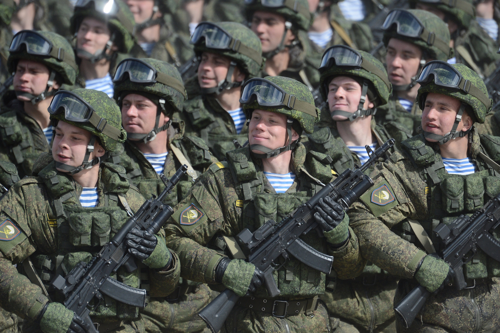

"Почему День защитника Отечества празднуют 23 февраля? Версии происхождения"
До 1949 г. 23 февраля считалось больше памятным, чем праздничным днем. С этого года появилась традиция устраивать торжества в честь солдат доблестной армии. Праздник проходит с парадами техники и войск, сопровождается концертами, пиротехническими шоу и прочими мероприятиями..
Со времен СССР в этот день вручаются памятные награды ветеранам войны. Позже к ним добавились солдаты, участвующие в различных военных кампаниях, в том числе иностранных, а также ветераны боевых действий. Таким образом, в День защитника Отечества вспоминают военнослужащих, которые сражались за Родину когда-либо, а также выражают уважение современным солдатам.
Вероятно, именно вручение грамот и памятных знаков солдатам стало началом традиции дарить подарки мужчинам 23 февраля, которая продолжается по сегодняшний день. К 60-м годам подарками награждали и солдат, отличившихся добросовестной службой. Постепенно эта традиция перешла в повседневную жизнь.

Вам понравится!
на главную